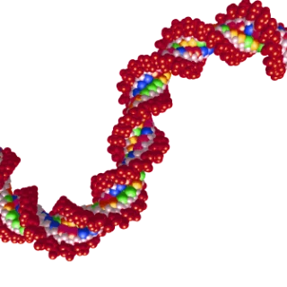
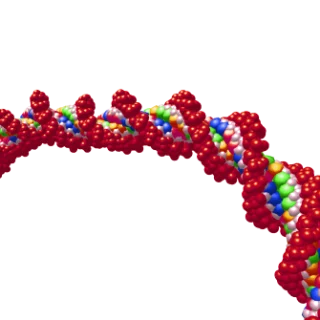
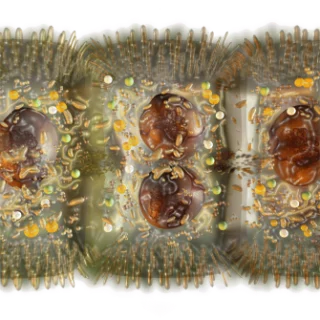
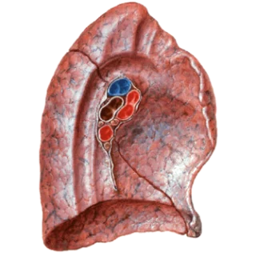
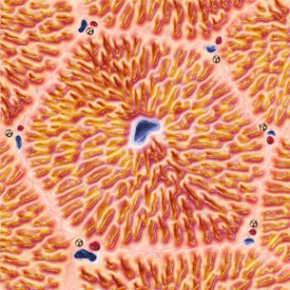
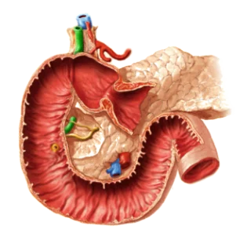
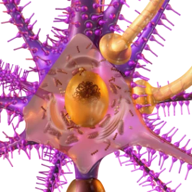
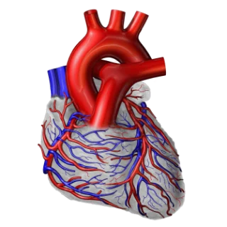
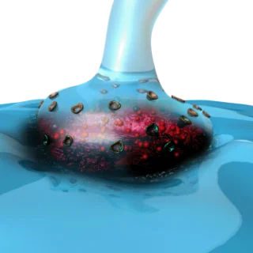
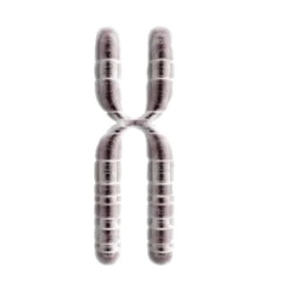
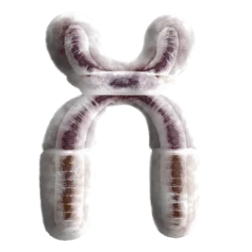
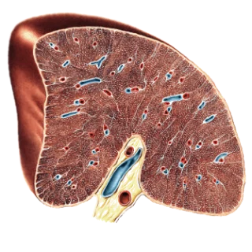
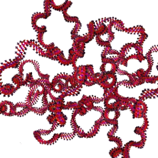
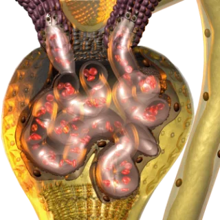
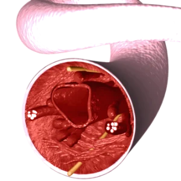
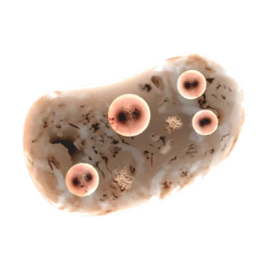
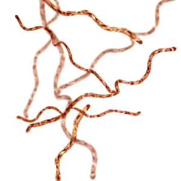
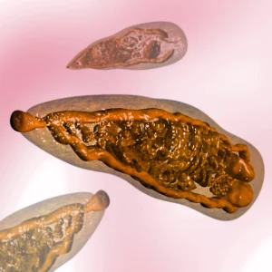
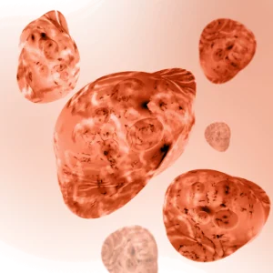
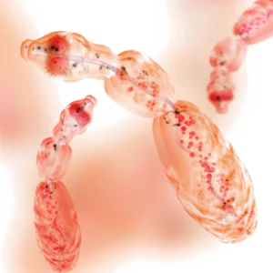
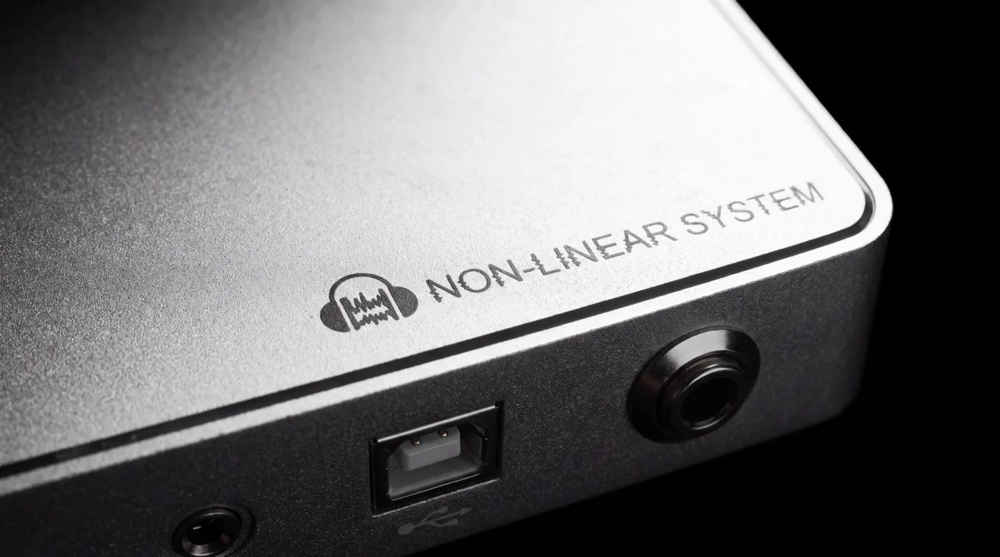
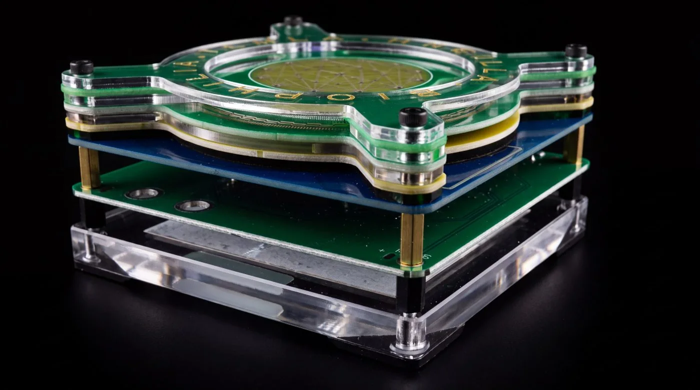
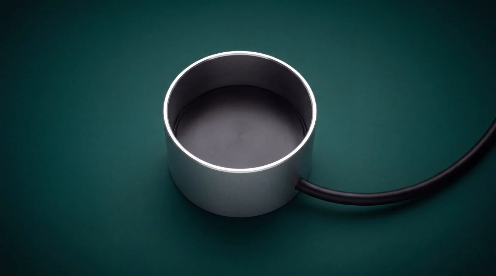
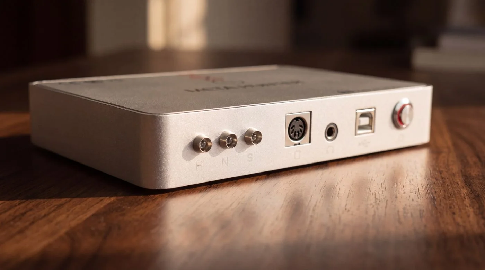
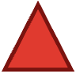
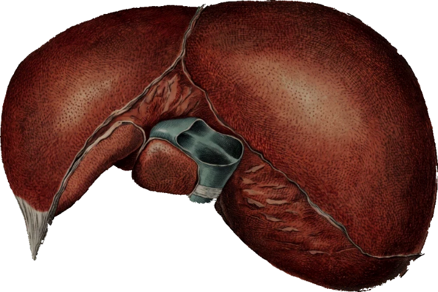
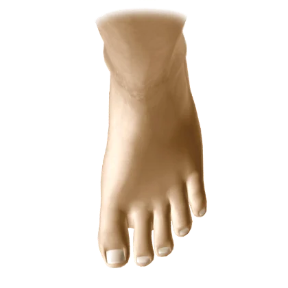
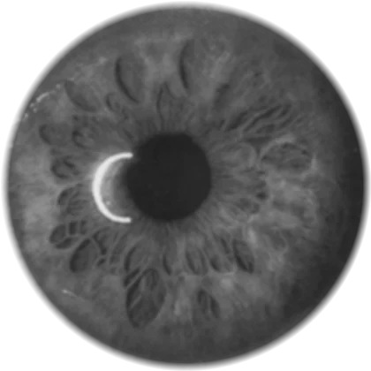
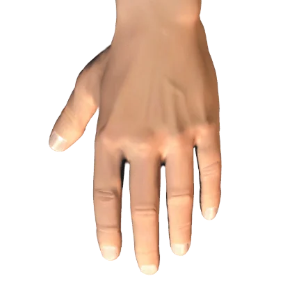
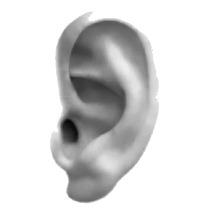
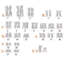
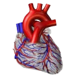
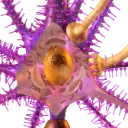
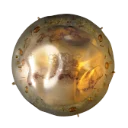
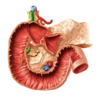
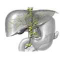
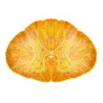
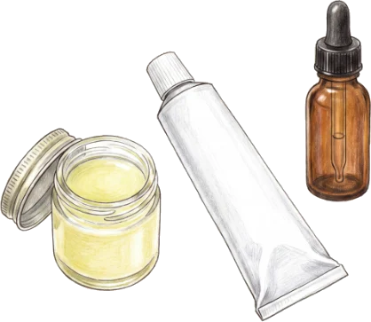
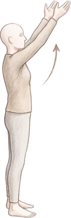
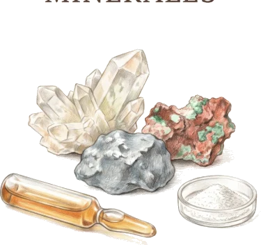
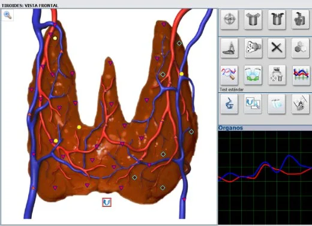
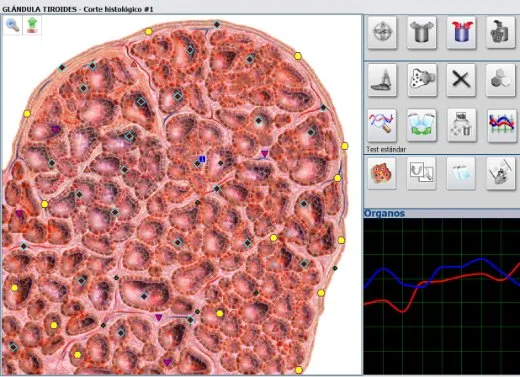
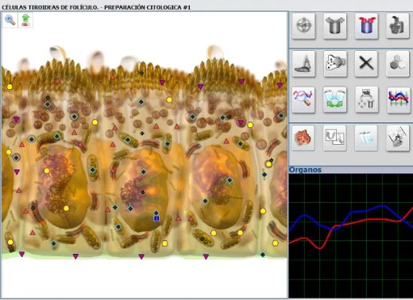
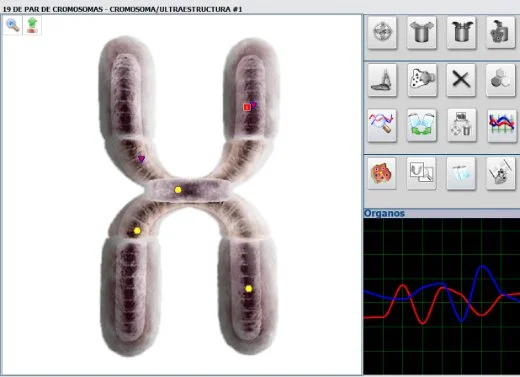
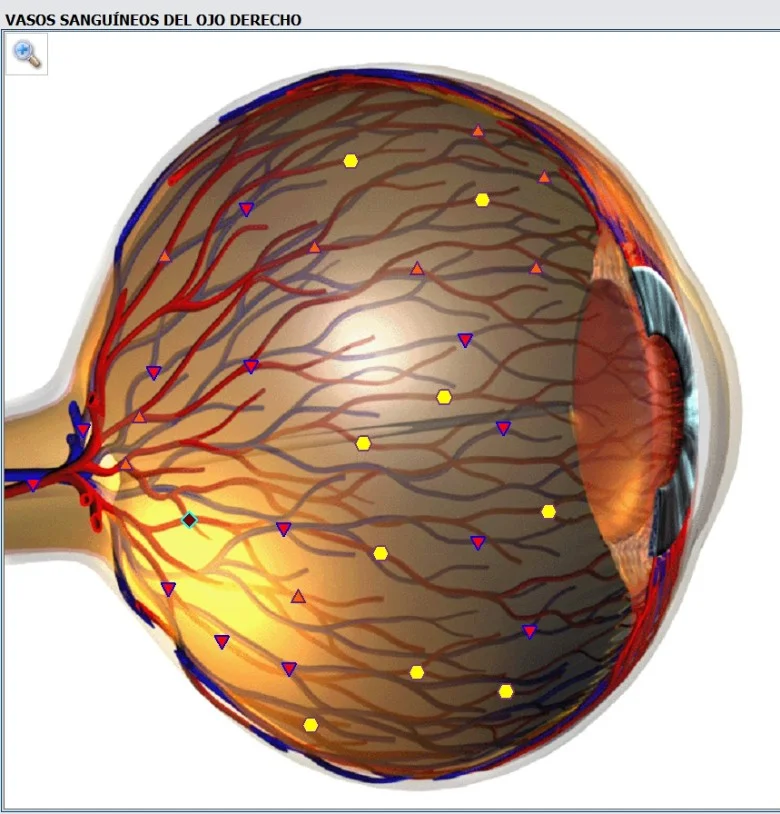
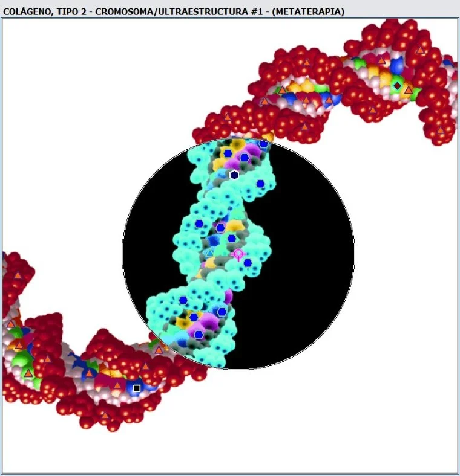
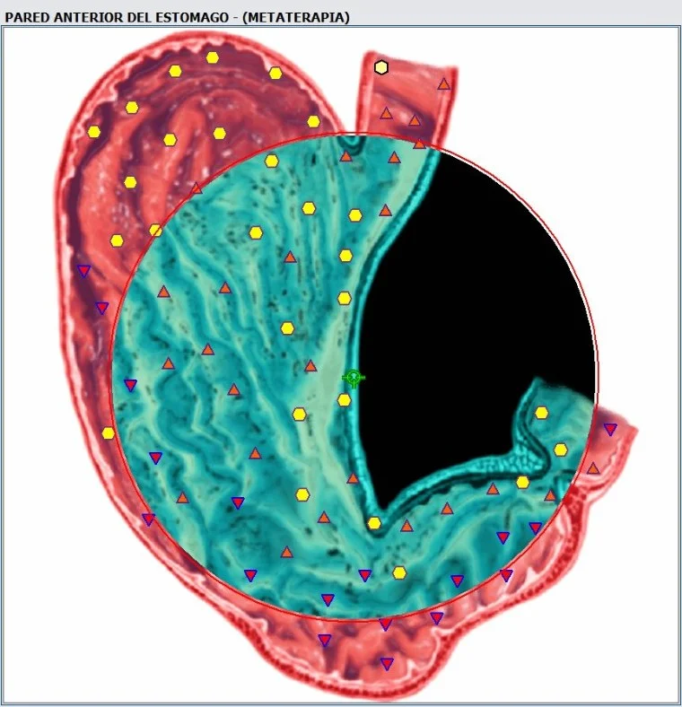
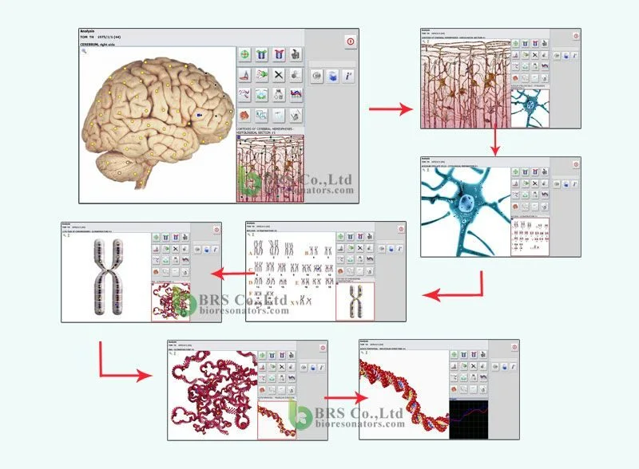
El análisis de biorresonancia lee la información de tu cuerpo para entender desde dónde viene lo que sentís —muchas veces antes del síntoma— y darte un plan concreto para trabajarlo desde la causa. Desde tu casa, estés en el país que estés.
Una tecnología con décadas de investigación de médicos y científicos rusos.
Todo lo vivo emite. Y esa emisión se puede leer.
Cada tejido, cada célula, cada estructura tiene un patrón de emisión propio —una frecuencia— y ese patrón se mantiene estable mientras la estructura está en orden. Cuando algo empieza a desordenarse, lo primero que cambia no es la forma: es la emisión. El método NLS (Instituto de Psicofísica Práctica, Moscú) compara la emisión de cada estructura contra un patrón de referencia y mide cuánto se aleja. Por eso la señal aparece antes que el síntoma: no miramos el daño, miramos la información que lo antecede.
Recién después llega la adaptación. El cuerpo se ajusta a ese desorden, y se vuelve a ajustar sobre esa adaptación, hasta que compensar se le hace costumbre. Cuando duele, ese sistema ya viene negociando hace rato. Por eso el síntoma casi nunca es el principio: es el final de una cadena larga. Y la señal temprana todavía es reversible.
No tratamos el síntoma · ajustamos la frecuencia que lo CAUSA
Un análisis no lineal (NLS) de biorresonancia: cada órgano, tejido y célula emite su propio espectro de frecuencias; el equipo lo lee y lo compara contra miles de patrones de referencia.
Desarrollado en Rusia, en el Instituto de Psicofísica Práctica de Moscú. Su creador, S. P. Nesterov, presentó en 1988 el sensor que lo hizo posible.
Continúa el trabajo de Tesla y la genética ondulatoria de P. Gariaev: el ADN intercambia información por campos electromagnéticos. Sobre esa idea se apoya todo lo demás.
Y es inocuo: no genera radiación. A diferencia de una radiografía o una tomografía, no te irradia mientras hace el escaneo.
No es un adorno ni una app. Es un equipo de biorresonancia con su oscilador Tesla, sus inductores y su copa de resonancia. El oscilador, visto de costado, son capas: plaquetas, bronces y circuitos apilados. Estas son fotos del equipo con el que trabajo, no imágenes de catálogo.
El equipo con sus puertos y conectores. Lo que lee y lo que emite pasa por acá.
De costado se ven las capas separadas: plaquetas, bronces y circuitos.
Simplemente un emisor y receptor de frecuencias. No lleva la muestra: emite y recibe.
El equipo lee las señales y las compara con cada patrón de su base, recorriéndote por dentro capa por capa. No mira una parte: recorre toda la escala, del órgano hasta la información más profunda.
Su base se construyó a lo largo de décadas, con registros de más de 100.000 personas y 1.000 procesos de salud. No compara contra teoría: compara contra gente real medida.
Lee los cambios cuando todavía son reversibles. No es invasivo, no usa radiación, y en lugar de mirar una parte ve el cuadro completo.
De la superficie a la molécula, capa por capa.
El equipo no lee el cuerpo físico: lee su información. Esa información viaja en una firma biológica —un conjunto de datos que te identifican de forma única—. Con esa firma, el equipo te reconoce y hace la misma lectura que si estuvieras sentado enfrente.
No hay nada que instalar ni ningún aparato en tu casa. Vos mandás tu firma biológica; el estudio lo hago yo, con el equipo.
Elegí una. No hace falta mandar las tres.
De frente, con buena luz, tomada estos días. Porta tu identidad como información. No sirve una de hace cinco años: tiene que ser de ahora.
Tu nombre completo y tu fecha de nacimiento exacta. Es la vía más cómoda: no tenés que mandar nada más, estés en el país que estés.
Si estás en el país podés mandarme una muestra de uñas, en una ziploc o bolsa bien cerrada. Es material genético directo.
Cualquiera de las tres sirve igual. El método que elijas no cambia nada: la lectura es exactamente la misma, y tu informe y tu terapia frecuencial son exactamente los mismos. Elegí la que te quede más cómoda.
No hace falta que estés presente ni que el escaneo sea en vivo. Con tu firma biológica alcanza — sin agujas, sin radiación, sin que tengas que viajar ni pedirte el día.
Las últimas consultas llegaron de Panamá, Galicia y Estados Unidos. La distancia dejó de ser el problema.
La sesión no es solo el análisis. Con el mismo equipo, después de leer qué órganos y tejidos están fuera de su frecuencia, se les emiten las frecuencias correctoras —la señal que ese tejido debería tener— para acompañarlo de vuelta a su punto de equilibrio.
A distancia funciona igual: la meta-terapia se emite sobre tu firma biológica —los datos y la foto, o la muestra de material genético—.
Es la parte del «ajustamos la frecuencia que lo CAUSA»: la biorresonancia lee, la meta-terapia corrige los puntos meta-estables (la información frecuencial). Todo lo que se emite queda registrado en tu informe.
Sobre los puntos de acupuntura de pies, manos, orejas e iris se aplica la técnica del Dr. Reinhold Voll —pero sin agujas y por frecuencias—. Eso permite algo que a un acupunturista le sería imposible con agujas: estimular todos los puntos al mismo tiempo, devolviendo cada punto bloqueado —cada bloqueo informacional— a su frecuencia óptima. Y a distancia, sobre tu firma biológica.
Es una de las cosas que hoy más despierta la pregunta: ¿tengo algo de esto adentro y no lo sé? El equipo lee la frecuencia de parásitos, hongos, bacterias y virus puntuales, y también la carga de metales pesados, tóxicos y alérgenos. Vemos qué aparece, dónde está y cuánto pesa sobre tu sistema.
Y no queda en la lectura: con lo que aparece, armo un plan de limpieza por etapas —siempre con recursos naturales— para descargar eso en el orden correcto, sin sacudir de más al cuerpo.
Elegís el botón según dónde estás: Argentina por Mercado Pago, resto del mundo en dólares. El pago confirma tu lugar.
Apenas se acredita el pago te llega el formulario de anamnesis. Ahí me contás tu motivo de consulta y tu historia, y cargás tu firma biológica (foto y datos, o la muestra de material genético). Lo hacés desde el celular, tranquilo, con el tiempo que necesites.
Los escaneos se hacen por orden de reserva, no en vivo: no tenés que estar presente ni coordinar un horario. Cuando llega tu turno, hago tu estudio.
Recorro tu información por dentro —del órgano al tejido, la célula, los cromosomas y el ADN— y emito las frecuencias correctoras sobre tu firma biológica. Todo queda registrado.
Te mando tu informe y tu plan. Si querés, coordinamos una llamada para revisar juntos lo que se vio y que me preguntes todo lo que te haya quedado dando vueltas.
El estudio lo hago yo, personalmente, con el equipo que viste más arriba: cada barrido, cada emisión y cada informe pasan por mis manos. Y cuando terminás de leer el tuyo, del otro lado de la llamada estoy yo.
Qué se revisó en el análisis, órgano por órgano, y qué apareció en cada nivel. Escrito para que lo entiendas vos, no para un colega.
Qué emoción sostiene cada señal. Porque muchas veces lo que el cuerpo carga empezó como algo que no se pudo soltar.
Siempre natural: homeopatía, fitoterapia, parafarmacia y nutracéuticos específicos por resonancia espectral —los que tu cuerpo demanda—. Listo para arrancar.
Una planilla para completar, con hábitos específicos pensados y adaptados a los resultados de tu informe. Para que el cambio no dependa de la memoria.
Un plan de alimentación con orientación ayurvédica, según lo que tu cuerpo necesita — no una dieta genérica de internet.
Las capturas del equipo con todos sus puntos informacionales: cómo se encuentra cada órgano.
Después de que leas el informe, si querés, nos sentamos en una llamada de 30 a 40 minutos a repasarlo juntos y me preguntás todo lo que te haya quedado dando vueltas.
Todo esto —el análisis, la terapia frecuencial, el informe, el plan y la llamada— es una sola sesión.
Estas son capturas reales de mis propios barridos, no ilustraciones. Los marcadores de colores son lo que el equipo va dejando al medir, y las curvas azul y roja son la lectura en vivo. Con tu informe te llegan las tuyas.
Según lo que aparece en tu lectura, tu plan se arma con recursos naturales. Estas son las ocho familias con las que trabajo: de tu informe sale la combinación exacta que te toca.
Plantas medicinales en tintura, extracto o infusión.
Glóbulos y diluciones según lo que resuena en tu lectura.
Específicos por resonancia espectral: lo que tu cuerpo demanda.
Cremas, geles y preparados de uso externo.
Tu plan con orientación ayurvédica, según lo que necesitás.
Respiración, movimiento y descanso como parte del plan.
Oligoelementos y litoterapia para reponer lo que falta.
Para la capa emocional que sostiene la señal.
Siempre como complemento, nunca como reemplazo. Lo que entra a tu plan lo define tu lectura, no una lista genérica.
Querés un chequeo anual profundo.
Te dijeron que está todo bien y vos seguís sintiéndote mal.
Varios médicos te dijeron cosas distintas y no encontrás respuestas.
Notaste algo y querés verlo antes de que vaya a más.
Arrastrás cansancio, dolores crónicos, migrañas o mal descanso sin causa clara.
Problemas digestivos que van y vienen.
Querés saber qué llevás adentro: parásitos, hongos, metales, tóxicos.
Atravesás algo serio, con nombre y con tratamiento en curso, y buscás un acompañamiento natural e integral que sume sin interferir.
Vivís lejos y nunca tuviste cómo acceder a esto.
Tu informe llega en 2 a 6 días desde que se acredita el pago.
No. Con tu foto y tus datos ya puedo hacer el estudio. No coordinamos nada: cuando llega tu turno, lo hago.
Desde Argentina, por Mercado Pago. Desde cualquier otro país, en dólares por plataforma internacional.
Se usan una sola vez: para tu lectura. No se comparten ni se publican.
Sí. Siempre como complemento, nunca como reemplazo.
Para eso está la llamada de devolución: lo leemos juntos.
¿Te queda alguna duda antes de reservar?
Escribime por WhatsApp¿Querés saber qué está diciendo?
Cada análisis lleva su tiempo de equipo: hago 15 aprox. por semana, por orden de reserva. El pago confirma tu lugar en la fila — después te llega el formulario de anamnesis para cargar tu firma biológica.